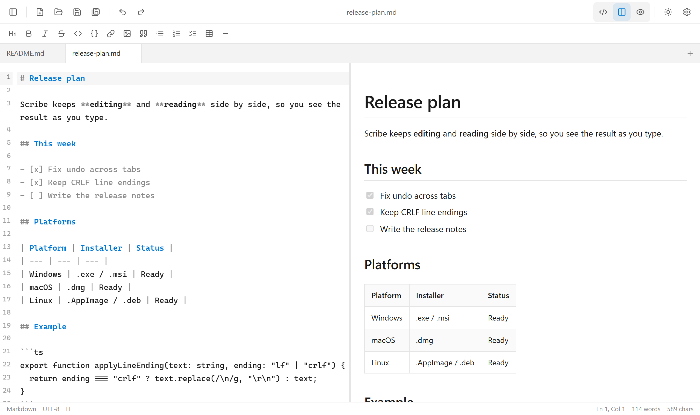
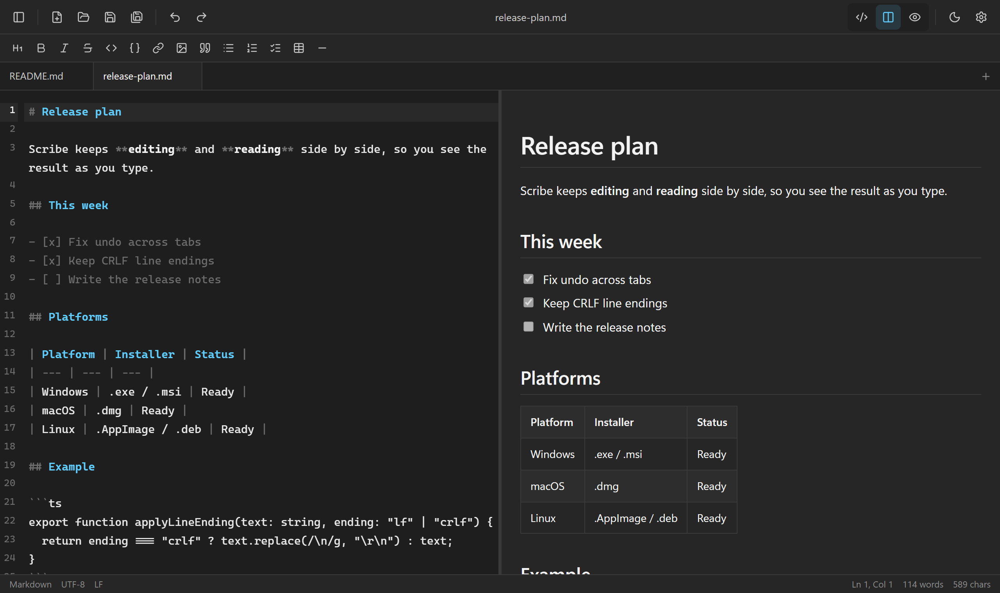
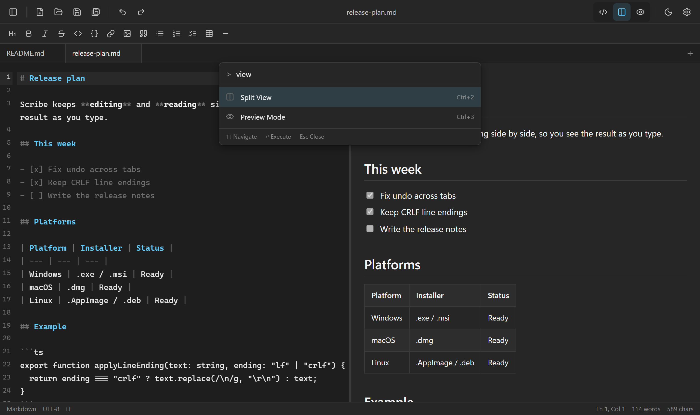
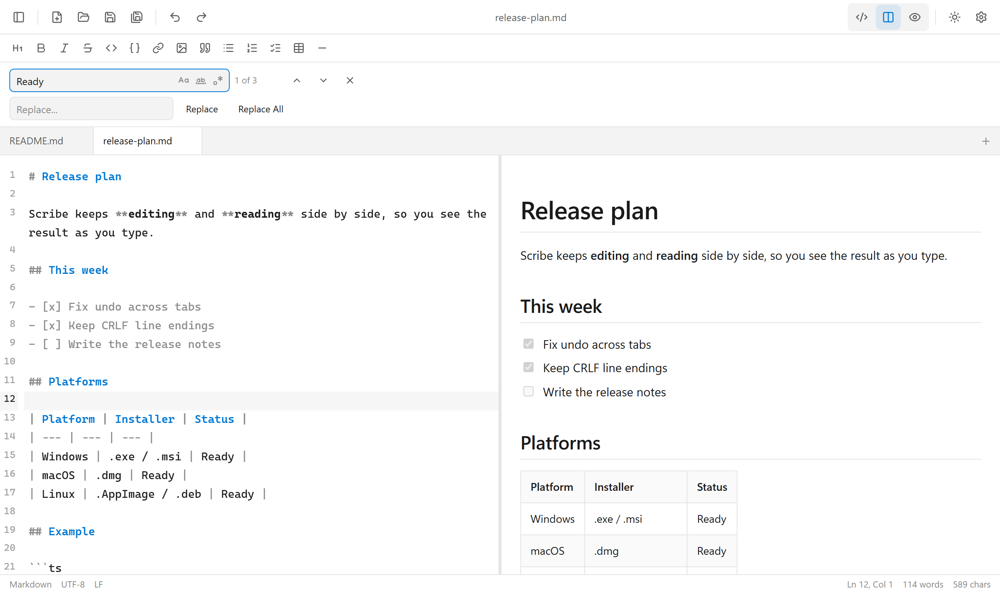

Editor and preview
Switch between editor-only, split, and preview-only layouts. Resize the split divider as you work.
Scribe is a small desktop editor for ordinary Markdown files. Work in a single editor, a formatted preview, or both side by side, without moving your notes into a cloud workspace.


Editing tools that help without getting in the way.
Switch between editor-only, split, and preview-only layouts. Resize the split divider as you work.
Tables, task lists, strikethrough, and syntax-highlighted code blocks, including a copy action.
Open several files; each keeps its own undo history, cursor position, and unsaved-change indicator.
Navigate matches and replace text using case, whole-word, or regular-expression options.
Toolbar actions, a searchable command palette, and automatic continuation for lists and checkboxes.
Open from your file manager, preserve LF/CRLF line endings, and export rendered Markdown as HTML.
Auto-close brackets, continue lists and quotes, and indent with Tab or Shift+Tab.
Warn before closing unsaved changes, optionally autosave existing files, and preserve per-tab undo history.
Choose fonts, wrapping, line numbers, and light, dark, or system themes. Check word, character, and cursor counts.
Compare the workflows and runtimes, rather than unmeasured speed claims. Capabilities of other editors vary by product.
| Consideration | Scribe | Electron desktop editors | Browser-based editors |
|---|---|---|---|
| Runtime | Tauri 2 uses the operating system's webview. | Electron includes Chromium and Node.js. | Runs inside an installed web browser. |
| Local files | Native open and save dialogs for Markdown files. | Local file access depends on the editor. | Local file access depends on the site and browser permissions. |
| Without internet | Edit and save local documents after installation. | Many work offline; features vary. | Offline editing is possible when the site supports it. |
| Account | No sign-in required to edit local files. | Depends on the application. | Depends on the application. |
| Editing workflow | Tabs, live split preview, find and replace, and command palette. | Feature set varies by editor. | Feature set varies by editor. |
This is a comparison of implementation and available features, not a performance benchmark. Startup time, RAM use, and keystroke latency have not been measured in a reproducible cross-editor test. Remote images in Markdown may still need an internet connection. Runtime details: Tauri documentation and Electron documentation.
Work with the keyboard or use on-screen controls. The workspace supports light, dark, and system appearance settings.


No account or workspace setup is required.
Get the installer for your operating system from the release section below.
Create a document or open existing Markdown files with the file picker or drag and drop.
Switch layouts to write and read. Save changes directly to your selected local file.
Use Cmd instead of Ctrl on macOS. These shortcuts work in the desktop editor.
| Keys | Action |
|---|---|
| Ctrl N | New document |
| Ctrl O | Open files |
| Ctrl S | Save |
| Ctrl Shift S | Save as |
| Ctrl W | Close tab |
| Ctrl Z / Ctrl Y | Undo / redo |
| Ctrl B | Bold |
| Ctrl I | Italic |
| Ctrl K | Insert link |
| Keys | Action |
|---|---|
| Ctrl Shift P | Command palette |
| Ctrl F / Ctrl H | Find / replace |
| Ctrl 1 2 3 | Editor / split / preview |
| Ctrl \ | Toggle sidebar |
| Ctrl = / Ctrl - | Zoom in / out |
| Ctrl 0 | Reset zoom |
| F11 | Fullscreen |
Choose a package below. All builds are available on the latest GitHub release.
Windows 10/11 · EXE or MSI installer
Apple silicon and Intel · DMG
AppImage, Debian package, or RPM
Installers are not currently code-signed; Windows or macOS may display an unverified publisher warning. Verify the source and release before installing. GitHub Pages hosts this product page, not an online editor.
Scribe opens and saves local Markdown files. Remote images referenced inside those documents may be requested from their hosts. This website queries GitHub’s public release API to list current downloads; when unavailable, links to the release page remain available.